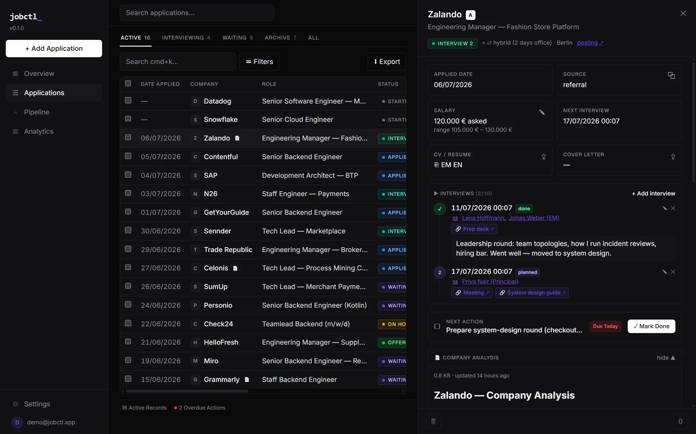

How it works
No forms, no copy-pasting into spreadsheets. You talk to your agent anyway — now it keeps your pipeline, too.
Connect your agent
One command: claude mcp add with a token from Settings. Works with any MCP client — Claude Code, Codex, Cursor.
Apply & tell it
Mention applications in plain words — statuses, salaries, interviews, recruiter notes. The agent writes it all down, with attribution.
Review & decide
Dashboard for humans: pipeline, due actions, interview prep, analytics. Every change in a timeline — 🤖 agent or 👤 you.
Built for a real job hunt
Everything a developer actually tracks during a search — nothing you don't.
MCP-native
The agent is a first-class citizen: 8 tools from add_application to attach_analysis. Raw one-liners get parsed — dates, priorities, sources.
Match assessment
Your agent's "why this role fits you" analysis is saved on the application — strengths, gaps, salary advice — not lost in chat history.
Company analysis
Attach agent-researched markdown per company: culture, comp bands, risks, interview process. Expandable right in the detail view.
Interviews & prep
Attendees with profile links, prep materials, recaps, planned/done — and the next interview is always visible on the card.
Pipeline & analytics
Kanban, response rates, weekly activity, salary tracking in EUR. Archive old campaigns without polluting current stats.
Yours, exportable
Magic-link login, revocable API tokens, full JSON export, GDPR delete. Your job search is your data.

Start in one minute
Grab a token at app.jobctl.app/settings, connect your agent - done.
claude mcp add --transport http jobctl https://app.jobctl.app/mcp \ --header "Authorization: Bearer jc_..." # then just talk: "I applied to Bosch as Tech Lead, prio A, follow up friday"
/plugin marketplace add DmytroRybka/jobctl-claude /plugin install jobctl@jobctl "Siemens invited me to a Get2Know call, Thursday 9:00" ✓ status → interview_1 · interview logged with attendees · prep reminder set "what's next in my job search?" ✓ due actions, upcoming interviews and follow-ups - straight from your pipeline
npx jobctl login jc_... npx jobctl add "Bosch, Tech Lead, prio A, due friday, remote" npx jobctl due
Pricing
Built by a developer during his own job hunt. Early birds stay free.
Claim your early spot